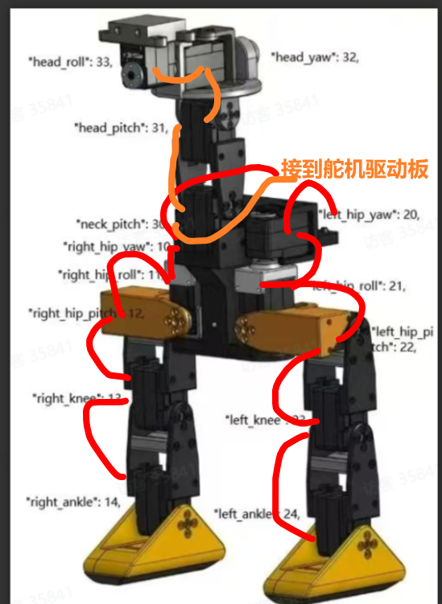

<!DOCTYPE lake>
<p data-lake-id="ua9265a81" id="ua9265a81" style="text-align: left"><span data-lake-id="u3cd38662" id="u3cd38662">将1开头的线全部串联在一起</span></p><p data-lake-id="u3b589320" id="u3b589320" style="text-align: left"><span data-lake-id="u28c51233" id="u28c51233">将2开头的线全部串联在一起</span></p><p data-lake-id="u67dbfa20" id="u67dbfa20" style="text-align: left"><span data-lake-id="u5573a7aa" id="u5573a7aa">将3开头的线全部串联在一起</span></p><p data-lake-id="ubc0e70c2" id="ubc0e70c2" style="text-align: left"><span data-lake-id="uaeda91e6" id="uaeda91e6">​</span><br/></p><p data-lake-id="ue82a2e9a" id="ue82a2e9a" style="text-align: left"><span data-lake-id="ue1aae38d" id="ue1aae38d">最后将10,20,30插入舵机驱动板</span></p><p data-lake-id="ub5761627" id="ub5761627" style="text-align: center"></p>